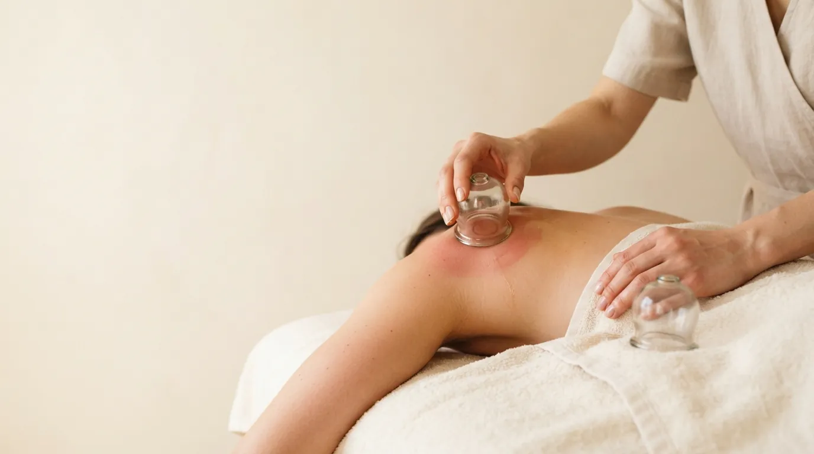

Body massage · Prague 4
Vacuum (Cupping) Body Massage in Prague
Cups that draw the tissue up instead of pressing it down. They actively stimulate blood and lymph circulation, reduce swelling and help fight cellulite.
What vacuum body massage is
Vacuum, or cupping, massage uses cups that create suction and draw up the skin and the tissue beneath it. Rather than pressing deep, they lift the tissue - loosening the layers under the skin and strongly boosting blood and lymph flow.
I glide the cups smoothly over oiled skin, or leave them in place for a moment where the tension is greatest. The massage suits swelling, problem areas with cellulite and a stiff back.
How the treatment works
- Oil and warming up I apply oil and warm the area with a short manual massage.
- Working with the cups The cups follow smooth strokes in the direction of lymph flow. I adjust the suction to your sensitivity.
- Targeted areas I spend longer with the cups on stiff or problem areas.
- Settling Closing manual strokes calm the skin and even out the flush.
What vacuum body massage does
- strongly improved circulation
- better lymph flow
- less swelling
- care against cellulite
- release of stiff muscles
- firmer, smoother skin
Who it suits
Vacuum body massage suits you if you deal with swelling, heavy legs or cellulite, or have a stiff back. It works well alongside an anti-cellulite or lymphatic drainage massage.
When we do not massage
- varicose veins or broken capillaries in the treated area
- blood clotting disorders or blood thinners
- injured, irritated or inflamed skin
- pregnancy
- fever and acute illness
Not sure? Call me before booking on +420 721 761 411 and we will talk it through.
Price of vacuum body massage
Frequently asked questions
Will it leave marks?
It can. On the body, especially the back, cups may leave temporary red or purple marks. They do not hurt and fade within a few days. If you have an event with a bare back coming up, tell me and I will keep the cups moving.
Does cupping massage hurt?
You feel a strong pull, but it should not hurt. I set the suction to suit you and can lower it at any time.
Does it help with cellulite?
Cups support circulation and lymph flow, which softens the look of cellulite. The best results come from a course of sessions combined with exercise and enough water.
How often should I repeat it?
For a visible change, a course of several sessions a few days apart works well. We will plan it together.
Book your vacuum body massage
The studio is in Prague 4 - Nusle, a short walk from Pankrác and Vyšehrad. Booking online takes a minute.